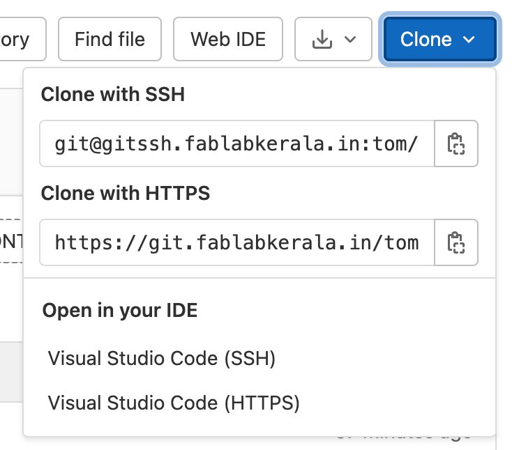

Week 1: Project Management and Final Project
Final Project
I'm considering two projects at the moment. The final decision will be taken after getting feedback from the Fab Gurus in Super FabLab Kerala.
TimeWinder
A rune that gives the user the ability to control time.

ComLink
A device to send status messages to close friends, families and allies.

Project Management
Two tools, primarily used by developers, were set up for managing the documentation, publishing, and version control.
Setting up Git
- Installed Homebrew from the Mac Terminal using the below command. Xcode and Git installed automatically.
- Set up the ssh key using the below command.
Note: I chose the destination folder as .ssh in home folder. The dot makes it a hidden folder. I didn't add a passcode, but it is good to add one. And don't publish the private key anywhere. Private key is the randomart image inside the box. - Copied the public key from terminal using the below command. This creates a public key & private key pair for authentication.
- Logged in, added a new blank project in https://git.fablabkerala.in/ and named it Tom - Fab-Academy
- Added the public key I had copied in Git Preferences.
- Copied clone url from git.
- Executed the below clone command to create a Local Repo.
Note: The URL copied earlier needs to be added here and a tunnel is established between the lcoal repository on your system and the one on the git cloud. The tunnel's lock is the public key and the only key that will fit the lock is the private key pair you generated on your local system.
/bin/bash -c "$(curl -fsSL https://raw.githubusercontent.com/Homebrew/install/HEAD/install.sh)"
ssh-keygen -o

cat ~/.ssh/id_ed25519.pub


git clone git@gitssh.fablabkerala.in:tom/tom-fab-academy.git

Setting up Developer Environment
- Installed VSCode
- Installed extensions- Live Server [for real time page view] and Image [for conversion from .png to .jpg]. For Liver Server to work, make sure you right click on the index page and open it with Live Server.
- Couldn't install FlameShot on Mac (for editing screenshots, optional)
- Copied the template and opened the index page in VS Code.
- Edited the code to make this webpage.